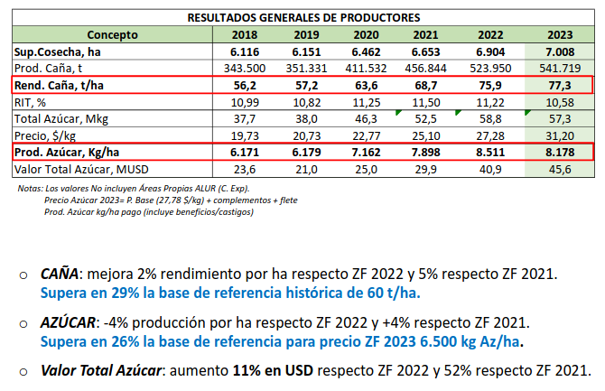
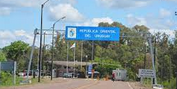
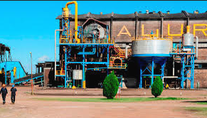

Producción agrícola
La economía de Bella Unión se basa principalmente en la agricultura, siendo la caña de azúcar el cultivo más emblemático. La producción se canaliza a través del ingenio azucarero local y cooperativas que agrupan a pequeños y medianos productores.
También son relevantes los cultivos de cítricos, arroz, maíz y horticultura. Los suelos fértiles y la disponibilidad de agua favorecen una agricultura intensiva que abastece tanto el mercado interno como las exportaciones.
Industria y comercio fronterizo
La ciudad posee una dinámica comercial impulsada por su ubicación estratégica en la frontera con Argentina y Brasil. Se desarrollan industrias de procesamiento de alimentos, jugos, azúcar y productos lácteos.
El intercambio con las ciudades vecinas de Monte Caseros (Argentina) y Barra do Quaraí (Brasil) genera un flujo constante de bienes y servicios, consolidando a Bella Unión como un punto clave de integración regional.
Desarrollo sostenible
En los últimos años, se han implementado políticas de diversificación productiva, fomento del ecoturismo y apoyo a emprendimientos rurales. También se promueven prácticas agrícolas sostenibles que reduzcan el impacto ambiental, buscando un equilibrio entre crecimiento económico y conservación de los recursos naturales.
